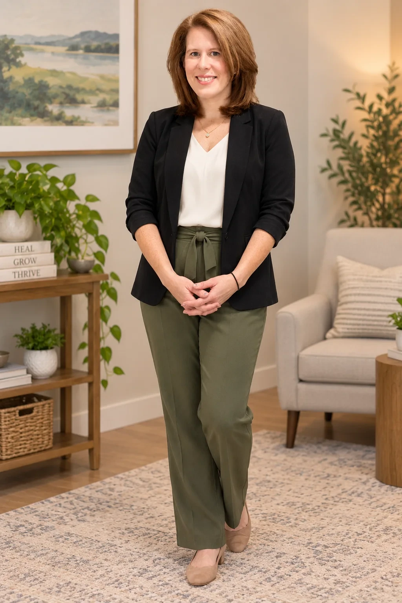
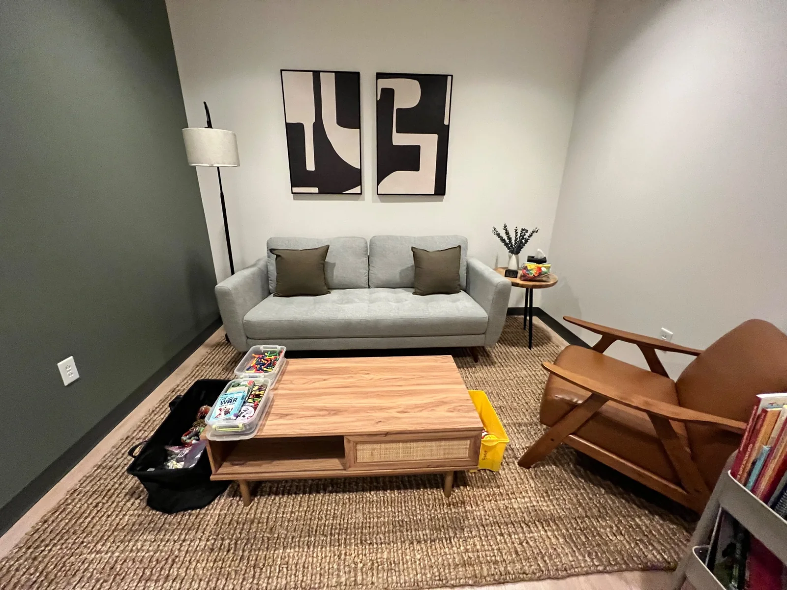
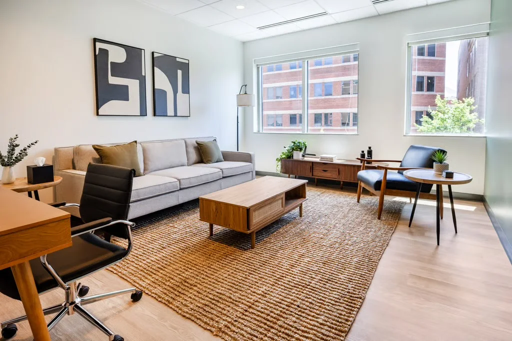
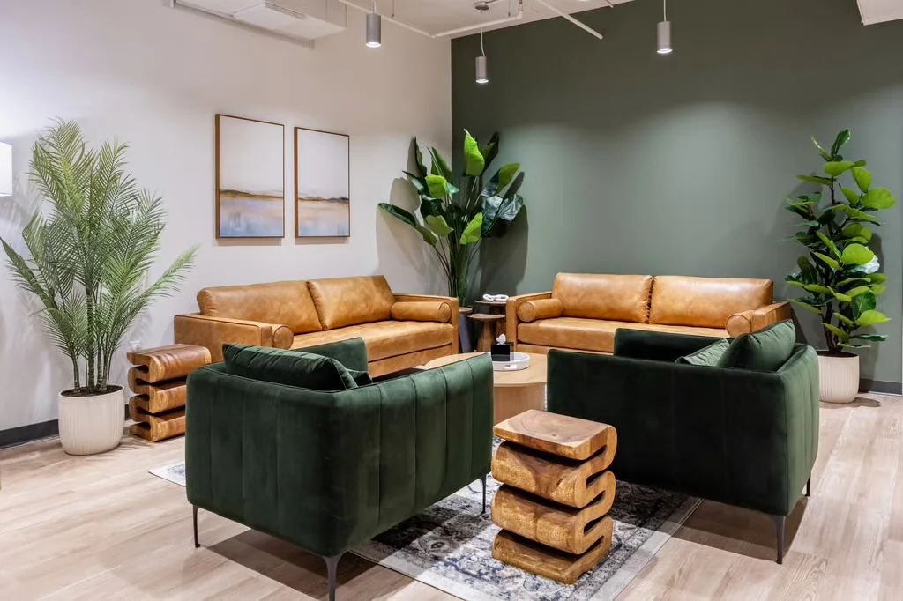
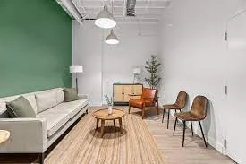
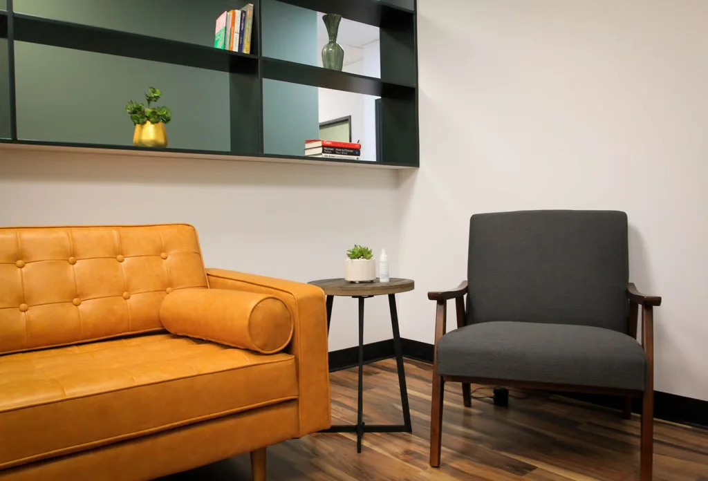

Therapy for Adolescents, Parents, Adults & Couples in Alexandria, VA
Forward Focus Counseling offers a warm, practical space for adolescents, adults, parents, and couples to understand patterns, strengthen relationships, and make meaningful change.

A thoughtful approach to meaningful change
Therapy is collaborative and tailored to each client. Rachel draws from evidence-based approaches including Emotionally Focused Therapy (EFT), Cognitive Behavioral Therapy (CBT), Internal Family Systems (IFS), and attachment-based frameworks, with a focus on identifying unhelpful patterns, increasing emotional awareness, and building useful tools for change.
Adolescents & young adults
Support for anxiety, identity, transitions, relationships, self-understanding, and the pressures of growing up.
Teen & young adult therapy →Parents
A collaborative space to understand family patterns, strengthen connection, and respond to challenges with greater confidence.
Parent counseling →Couples
Relationship-focused therapy to identify recurring cycles, improve communication, and create more secure connection.
Couples therapy →
In-person in Old Town Alexandria or virtual across Virginia
Choose the setting that works best for you. The Alexandria office offers a private, welcoming environment just off King Street, while secure virtual sessions provide flexibility from home.
Warm, private spaces designed for conversation





Common questions about therapy
Do you offer therapy for teens in Alexandria?
Yes. Forward Focus Counseling provides therapy for adolescents and teens ages 10+ in Alexandria, with support for concerns including anxiety, identity, emotional regulation, family relationships, school stress, and transitions.
Learn about teen therapy →Do you provide parent counseling?
Yes. Parent counseling can help parents understand family patterns, strengthen communication, set boundaries, respond to anxiety or avoidance, and approach challenges more intentionally.
Learn about parent counseling →Do you offer couples therapy?
Yes. Couples therapy focuses on recurring relationship cycles, communication, emotional needs, conflict, connection, and other relationship challenges using an EFT-informed approach.
Learn about couples therapy →Do you offer virtual therapy in Virginia?
Yes. In-person counseling is available in Old Town Alexandria, and secure virtual counseling is available throughout Virginia.
How much does therapy cost?
In-person and virtual counseling sessions are $205. Forward Focus Counseling is private pay and can provide superbills for possible out-of-network reimbursement.
View fees & contact information →What therapeutic approaches do you use?
Therapy is individualized and may draw from Emotionally Focused Therapy (EFT), Cognitive Behavioral Therapy (CBT), Internal Family Systems (IFS), Acceptance and Commitment Therapy (ACT), and attachment-based approaches.
Learn about therapy approaches →See whether Forward Focus Counseling feels like the right fit.
Schedule a free 15-minute consultation to talk briefly about what you are looking for and how therapy may support your goals.